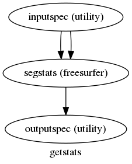

workflows.smri.freesurfer.utils¶
create_get_stats_flow()¶
Retrieves stats from labels
Parameters¶
- name : string
- name of workflow
- withreg : boolean
- indicates whether to register source to label
Example¶
Inputs:
inputspec.source_file : reference image for mask generation
inputspec.label_file : label file from which to get ROIs
(optionally with registration)
inputspec.reg_file : bbreg file (assumes reg from source to label
inputspec.inverse : boolean whether to invert the registration
inputspec.subjects_dir : freesurfer subjects directory
Outputs:
outputspec.stats_file : stats file
Graph¶

create_getmask_flow()¶
Registers a source file to freesurfer space and create a brain mask in source space
Requires fsl tools for initializing registration
Parameters¶
- name : string
- name of workflow
- dilate_mask : boolean
- indicates whether to dilate mask or not
Example¶
>>> getmask = create_getmask_flow()
>>> getmask.inputs.inputspec.source_file = 'mean.nii'
>>> getmask.inputs.inputspec.subject_id = 's1'
>>> getmask.inputs.inputspec.subjects_dir = '.'
>>> getmask.inputs.inputspec.contrast_type = 't2'
Inputs:
inputspec.source_file : reference image for mask generation
inputspec.subject_id : freesurfer subject id
inputspec.subjects_dir : freesurfer subjects directory
inputspec.contrast_type : MR contrast of reference image
Outputs:
outputspec.mask_file : binary mask file in reference image space
outputspec.reg_file : registration file that maps reference image to
freesurfer space
outputspec.reg_cost : cost of registration (useful for detecting misalignment)
Graph¶
![digraph getmask{
label="getmask";
getmask_inputspec[label="inputspec (utility)"];
getmask_register[label="register (freesurfer)"];
getmask_fssource[label="fssource (io)"];
getmask_threshold[label="threshold (freesurfer)"];
getmask_transform[label="transform (freesurfer)"];
getmask_threshold2[label="threshold2 (freesurfer)"];
getmask_outputspec[label="outputspec (utility)"];
getmask_inputspec -> getmask_fssource;
getmask_inputspec -> getmask_fssource;
getmask_inputspec -> getmask_register;
getmask_inputspec -> getmask_register;
getmask_inputspec -> getmask_register;
getmask_inputspec -> getmask_register;
getmask_inputspec -> getmask_transform;
getmask_inputspec -> getmask_transform;
getmask_register -> getmask_transform;
getmask_register -> getmask_outputspec;
getmask_register -> getmask_outputspec;
getmask_fssource -> getmask_threshold;
getmask_threshold -> getmask_transform;
getmask_transform -> getmask_threshold2;
getmask_threshold2 -> getmask_outputspec;
}](../../../_images/graphviz-c3d7c4cd84bd7672bd14c7e8fef78e3e3dc58b56.png)
create_tessellation_flow()¶
Tessellates the input subject’s aseg.mgz volume and returns the surfaces for each region in stereolithic (.stl) format
Example¶
>>> from nipype.workflows.smri.freesurfer import create_tessellation_flow
>>> tessflow = create_tessellation_flow()
>>> tessflow.inputs.inputspec.subject_id = 'subj1'
>>> tessflow.inputs.inputspec.subjects_dir = '.'
>>> tessflow.inputs.inputspec.lookup_file = 'FreeSurferColorLUT.txt' # doctest: +SKIP
>>> tessflow.run() # doctest: +SKIP
Inputs:
inputspec.subject_id : freesurfer subject id
inputspec.subjects_dir : freesurfer subjects directory
inputspec.lookup_file : lookup file from freesurfer directory
Outputs:
outputspec.meshes : output region meshes in (by default) stereolithographic (.stl) format
Graph¶
![digraph tessellate{
label="tessellate";
tessellate_inputspec[label="inputspec (utility)"];
tessellate_fssource[label="fssource (io)"];
tessellate_volconvert[label="volconvert (freesurfer)"];
tessellate_region_list_from_volume_node[label="region_list_from_volume_node (utility)"];
tessellate_id_list_from_lookup_table_node[label="id_list_from_lookup_table_node (utility)"];
tessellate_tessellate[label="tessellate (freesurfer)"];
tessellate_surfconvert[label="surfconvert (freesurfer)"];
tessellate_smoother[label="smoother (meshfix)"];
tessellate_outputspec[label="outputspec (utility)"];
tessellate_inputspec -> tessellate_fssource;
tessellate_inputspec -> tessellate_fssource;
tessellate_inputspec -> tessellate_id_list_from_lookup_table_node;
tessellate_fssource -> tessellate_volconvert;
tessellate_fssource -> tessellate_tessellate;
tessellate_volconvert -> tessellate_region_list_from_volume_node;
tessellate_region_list_from_volume_node -> tessellate_tessellate;
tessellate_region_list_from_volume_node -> tessellate_id_list_from_lookup_table_node;
tessellate_id_list_from_lookup_table_node -> tessellate_tessellate;
tessellate_tessellate -> tessellate_surfconvert;
tessellate_surfconvert -> tessellate_smoother;
tessellate_smoother -> tessellate_outputspec;
}](../../../_images/graphviz-26318e7c20cd6ea80ca581262598274c00fc40a7.png)
copy_file()¶
Create a function to copy a file that can be modified by a following node without changing the original file.
copy_files()¶
Create a function to copy a file that can be modified by a following node without changing the original file